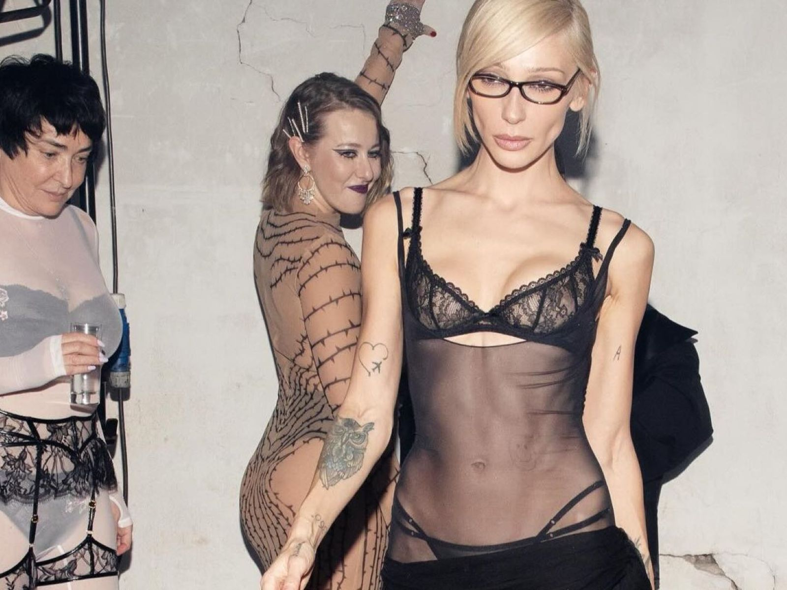
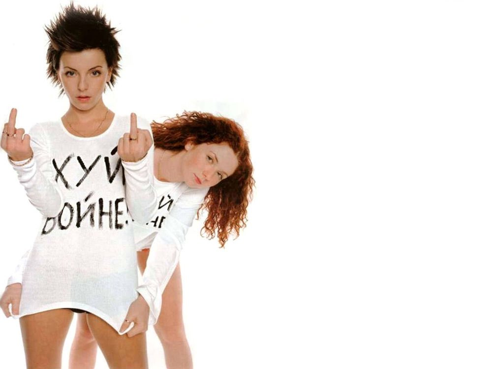
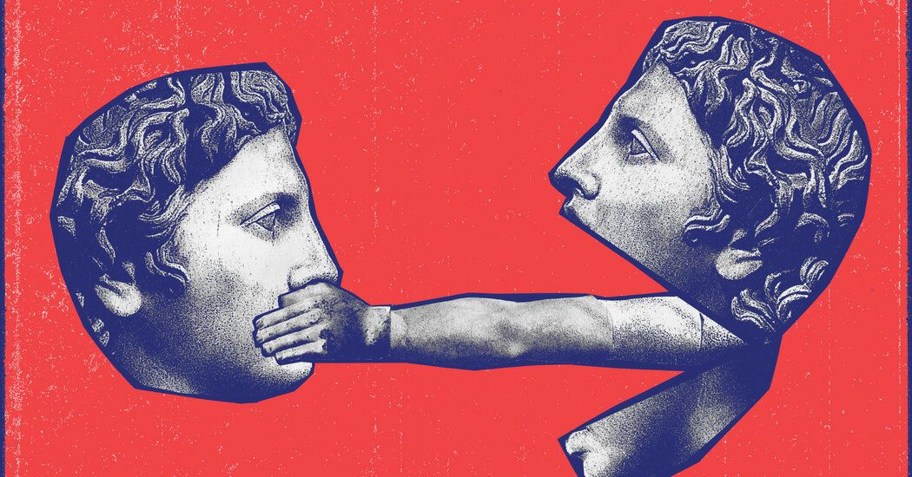
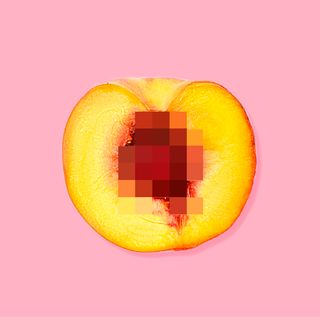
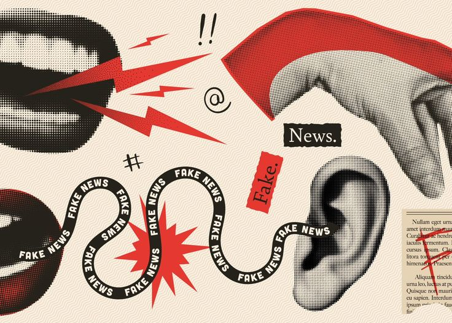
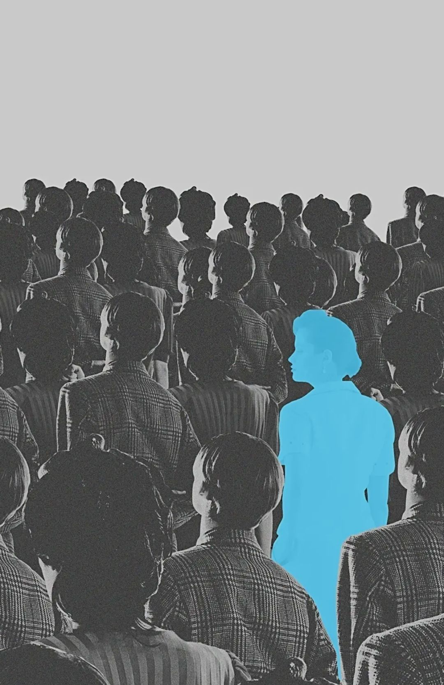
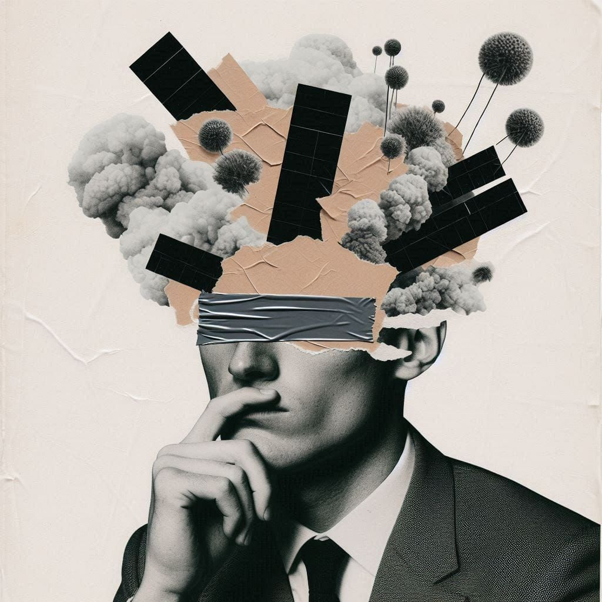
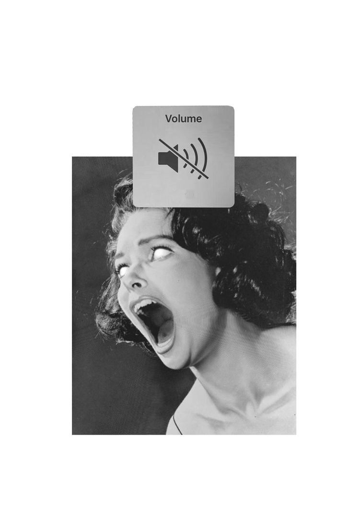
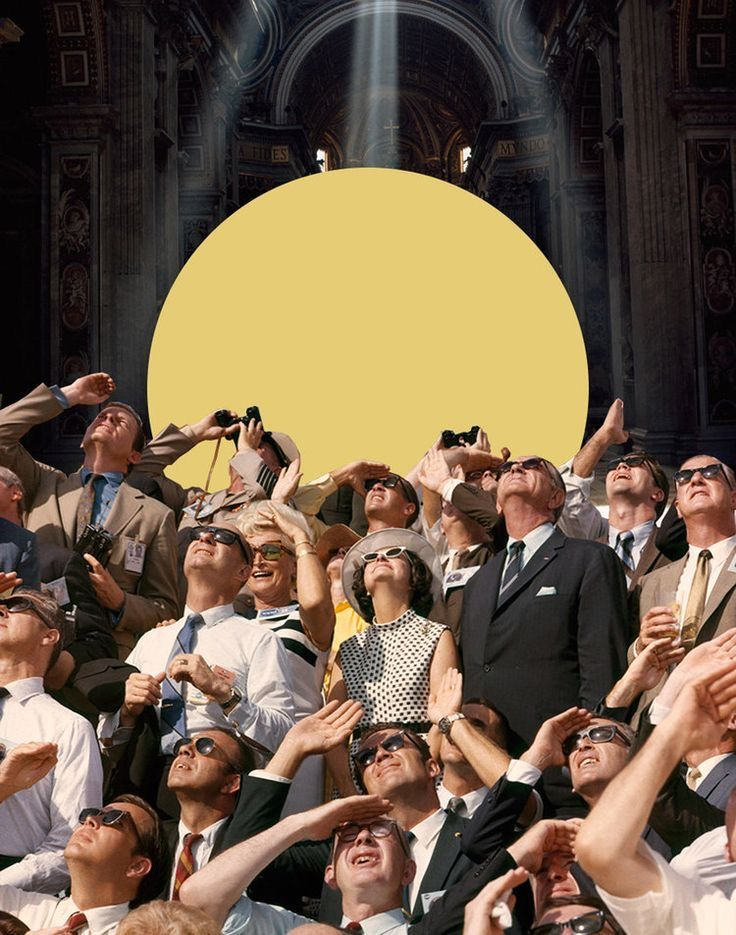
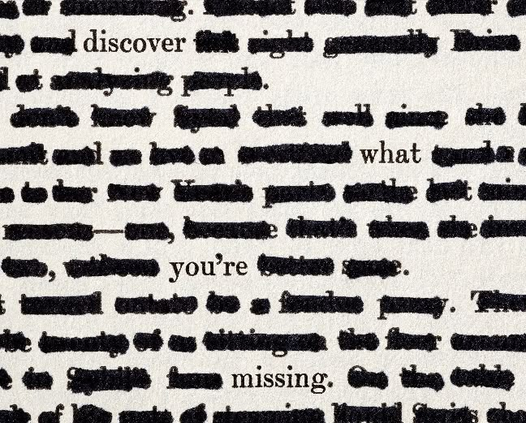

ConCreCen
Constraint-Driven Creativity under Censorship
1. Project Idea
Research question. How can censorship constraints and the creative responses to them be formally represented and explored through an ontology and knowledge graph?
Hypothesis. Censorship may function both as a barrier to creative expression and, in some documented cases, as a constraint that prompts alternative creative strategies.
ConCreCen models censorship as a process with consequences. A censorship event imposes a constraint on a creative work. The creator may respond to that constraint with a strategy, and that response has an outcome, which can range from suppression to creative adaptation. The project does not try to prove that censorship increases creativity. It records, with sources, the conditions under which creators respond to censorship, the strategies they use, and the outcomes that follow.
CensorshipEvent → CensorshipConstraint → CreativeResponse → CreativeStrategy → OutcomeType









2. Domain
Censorship
Censorship refers to the control, restriction, modification, or suppression of information and creative expression by an authority or institution. In the cultural domain, censorship may affect literature, film, music, visual arts, and other forms of creative production.
Censorship can take different forms, including complete bans, removal of specific content, required modifications, restrictions on publication or distribution, and prior approval by censoring authorities.
Creativity under constraints
Creativity does not necessarily occur in conditions of complete freedom. Creative processes often take place within different kinds of limitations, such as technical, economic, social, legal, or institutional constraints.
Constraints can reduce the range of available solutions, but they can also lead creators to search for alternative forms of expression.
3. Theoretical Framework
This project investigates the relationship between censorship, constraint, and creative response. Its starting point is an apparent paradox: censorship is primarily intended to restrict expression, yet in some documented cases creators react to such restrictions by modifying their methods of expression, adopting indirect forms of communication, or producing alternative versions of their works.
CreOn,
an ontology of creativity developed by Aldo Gangemi, provided conceptual
inspiration for this project. Its representation of the creative
environment through concepts such as CreativityPress and
EnvironmentalCondition prompted us to explore censorship as
a specific condition shaping creative activity. ConCreCen develops this
focus through its own model of censorship constraints and documented
creative responses, without formally reusing CreOn’s classes or properties.
The ontology is based on three complementary theoretical perspectives: Robert Darnton on censorship, Patricia D. Stokes on creativity under constraints, and Brent D. Rosso on the enabling and disabling effects of constraints.
Darnton: censorship as an institutional process
In Censors at Work: How States Shaped Literature (2014), Robert Darnton approaches censorship historically and comparatively through cases from eighteenth-century France, nineteenth-century British India, and twentieth-century East Germany. The author presents censorship as more than a simple distinction between “allowed” and “forbidden” works. He describes it as an institutional process involving authorities, censors, authors, editors, regulations, negotiations, revisions, and bans.
This perspective supports modelling censorship as an event or process, rather than as a simple property of a work:
| Subject | Relation | Object |
|---|---|---|
CensorshipEvent |
targetsWork |
CreativeWork |
CensorshipEvent |
imposedBy |
CensoringAgent |
CensorshipEvent |
usesMechanism |
CensorshipMechanism |
Darnton also distinguishes censorship from constraints in general:
not every limitation is censorship. This allows the
ontology to represent CensorshipConstraint as a specific
type of Constraint.
The work also demonstrates that censorship may operate through interaction and negotiation rather than only through complete prohibition. In the cases he studies, the relationships between authors, editors, censoring institutions, and cultural production could involve revisions, negotiations, approvals, surveillance, and self-censorship.
For this reason, the ontology does not reduce all censorship mechanisms
to Ban. Instead, it distinguishes concepts such as
Ban, Removal, Redaction,
ModificationRequirement,
DistributionRestriction,
PublicationRestriction, PriorApproval,
and SelfCensorship.
Stokes: creativity from constraints
The second and central theoretical component is Patricia D. Stokes’s model of creativity from constraints. In her article Creativity from Constraints: What Can We Learn from Motherwell? From Mondrian? From Klee? (2008), Stokes presents creativity as a form of problem solving structured by constraints. Her model is particularly relevant to this project because it directly questions the intuitive assumption that creativity requires maximum freedom.
Stokes describes a system of paired constraints. One constraint can preclude or limit the search among familiar and reliable solutions, while another can promote or direct the search toward novel alternatives. In simplified form:
Constraint → blocks a conventional solution → encourages search for alternatives
Applied to censorship, a restriction on direct expression may lead a creator to use another strategy, such as metaphor, allegory, symbolism, or indirect representation.
This idea is represented in the ontology through the following concepts and relations:
| Component | Ontology terms |
|---|---|
| Classes |
Constraint,
CreativeResponse,
CreativeStrategy,
OutcomeType
|
| Relations |
imposesConstraint,
respondsTo,
usesStrategy,
hasOutcome
|
The important point is that the constraint does not automatically create creativity: it changes the space of available solutions. A previously available solution becomes unavailable or less accessible, potentially forcing or encouraging the search for another solution.
This work allows us to model censorship not merely as an act of suppression but as a change in the conditions under which creative problem solving takes place.
Rosso: enabling and disabling effects of constraints
Brent D. Rosso’s article Creativity and Constraints (2014) adds an important qualification. His research shows that constraints do not always improve creativity: depending on their type and context, they may have either enabling or disabling effects.
For this reason, the ontology does not assume a direct causal relation of the form Censorship → causes → Creativity.
Instead, it represents multiple possible outcomes of creative responses to censorship constraints, including adaptation and suppression:
| Subject | Relation | Possible outcome |
|---|---|---|
CreativeResponse |
hasOutcome |
CreativeAdaptation |
CreativeResponse |
hasOutcome |
Suppression |
This makes the model conditional rather than deterministic.
Combined conceptual model
The three perspectives are combined into the following conceptual sequence:
Censorship Event → Constraint → Creative Response → Creative Strategy → Outcome
This sequence summarises the theoretical argument. In the formal ontology, both strategies and outcomes are linked to the creative
response through usesStrategy and hasOutcome, respectively.
- Darnton explains who censors, what is censored, and how censorship operates.
- Stokes explains how constraints can redirect creative problem solving.
- Rosso explains why constraints may either stimulate adaptation or suppress creativity.
The ontology therefore does not attempt to prove that censorship increases creativity. Instead, it models the conditions under which creators respond to censorship, the strategies they use, and the outcomes that follow.
Sources
- Darnton, R. (2014). Censors at Work: How States Shaped Literature. New York: W. W. Norton.
- Stokes, P. D. (2008). Creativity from Constraints: What Can We Learn from Motherwell? From Mondrian? From Klee? The Journal of Creative Behavior, 42(4), 223–236. DOI: 10.1002/j.2162-6057.2008.tb01297.x.
- Rosso, B. D. (2014). Creativity and Constraints: Exploring the Role of Constraints in the Creative Processes of Research and Development Teams. Organization Studies, 35(4), 551–585. DOI: 10.1177/0170840613517600.
4. Methodology
Scope
The knowledge graph covers documented cases of censorship of creative works in three media (literature, music and film) and three censorship regimes: the German Democratic Republic, the Soviet Union and the Hollywood Production Code. Together they span the period from 1936 to 1985. A case is included only if at least the censorship event is documented in a scholarly or documentary source. A creative response is recorded only if a source documents it. If a source reports a ban without a response, the case is recorded as an event without a response, not as an inferred adaptation.
Sources
The 25 sources include scholarly monographs and chapters (Frolova-Walker & Walker; Billheimer; Guibert-Yeche; Curtis), peer-reviewed articles (Szabó; Giger; Rosenshield; Pope), historical and critical articles (Darnton in The New York Review of Books, Höpcke in Die Weltbühne), and institutional web sources: festival documentation (Cannes), museum documentation (Nolde Museum Seebüll, National Gallery of Ireland), the American Film Institute catalog, opera-house and critical-edition materials (Metropolitan Opera, Ricordi), and human-rights reporting (Center for Human Rights in Iran). Wikipedia entries were used only for orientation and are marked as tertiary sources. The full list is available in Bibliography.
Extraction
Facts were extracted manually into a fixed template (cases.csv), with one row per
event–response pair. Every relation between a censorship event and a creative response is stored as a
Claim with its supporting sources and a confidence level (high or medium). Interpretations
that remain contested in the literature have medium confidence. An LLM assistant was used to search for
and summarise sources and to draft Turtle code. Every fact entered into the dataset was checked against
the cited source.
Ontology design methodology
The ontology was developed iteratively and driven by competency questions, following the eXtreme Design approach:
- Theory → competency questions. The ten CQs were derived from the theoretical framework.
- Core TBox (v1). The classes and properties needed by the CQs were modelled in OWL and edited and inspected in WebProtégé, together with a synthetic test case.
- Revision (v2). The domain of
hasOutcomewas narrowed fromEventtoCreativeResponse, because an outcome belongs to a creator’s response, not to the act of censorship. English and Russian labels and definitions were added to all entities. - Population and refinement (v2.1). Populating the graph with real cases required new controlled values (
Irony,ParatextualFraming,Fragmentation,StylisticRestriction), aresultsInWorkrelation and subclasses ofSource. - Extension (v2.2). Five further cases added two modelling distinctions: an ongoing
CreativePractice(Panahi, Nolde) can be the target of censorship (targetsPractice), and the range ofperformedBywas widened fromCreatortoAgentso that editors and estates (Schlenstedt, Elena Bulgakova) can perform responses. New classesEditorandCreativePractice, new data propertiesclaimTextandbibliographicCitation, and the duplicate relationproducesWorkwas unified intoresultsInWork. - Validation. The HermiT reasoner checked consistency, and the CQs were run as SPARQL queries (see Evaluation).
5. Knowledge Representation
The ConCreCen core ontology (v2.2, namespace http://example.org/censorcreate#) contains
35 classes, 21 object properties, 11 data properties and four controlled
vocabularies. All of them are described below. An interactive view is in Knowledge Graph.
5.1 Competency questions
- Which creative works were subjected to censorship?Entities/relations:
CensorshipEvent,targetsWork,CreativeWork - Who or which institution imposed censorship on a work?Entities/relations:
imposedBy,CensoringAgent - Which censorship mechanism was used?Entities/relations:
usesMechanism,CensorshipMechanism - What element or aspect of the work was constrained?Entities/relations:
imposesConstraint,constrainsElement,WorkElement - What constraint resulted from the censorship event?Entities/relations:
CensorshipConstraint,hasConstraintType,ConstraintType - How did the creator respond to the constraint?Entities/relations:
hasResponse,CreativeResponse,respondsTo,performedBy - Which creative strategy was used in the response?Entities/relations:
usesStrategy,CreativeStrategy - What was the outcome: adaptation, modification, suppression, abandonment, etc.?Entities/relations:
hasOutcome,OutcomeType - Which creative strategies recur across different media or censorship mechanisms?Entities/relations:
usesStrategy,CreativeWork subclasses,usesMechanism - Which sources support the claimed relationship between a censorship event and a creative response?Entities/relations:
Claim,aboutCensorshipEvent,aboutCreativeResponse,supportedBy,Source
5.2 Classes
| Class | Subclass of | Definition |
|---|---|---|
AdaptiveCreativeResponse | CreativeResponse | A creative response that uses at least one creative strategy and has the outcome CreativeAdaptation. Membership is inferred by a reasoner. |
Agent | — | A person, group, or institution that can act in a censorship or creative process. |
AudioElement | WorkElement | A sound, musical passage, or spoken audio component of a creative work. |
Book | Source | A monograph or edited volume used as a source. Added in v2.1. |
BookChapter | Source | A chapter in an edited or collected volume used as a source. Added in v2.1. |
CensoredWork | CreativeWork | A creative work that is the target of at least one censorship event. Membership is inferred by a reasoner. |
CensoringAgent | Agent | An agent who imposes or carries out censorship, such as a censor, editor, publisher, board, or platform. |
CensoringAuthority | CensoringAgent | An institutional censoring agent with formal power to approve, restrict, or prohibit creative works, such as a state censorship office or official board. |
CensorshipConstraint | Constraint | A constraint imposed by a censorship event. Not every constraint is censorship; this class covers only constraints resulting from censorship. |
CensorshipEvent | Event | A documented act or process of censorship affecting a creative work, carried out by a censoring agent through a censorship mechanism. |
CensorshipMechanism | — | A method through which censorship is applied to a creative work, such as a ban, removal, or required modification. |
Claim | — | A statement linking a censorship event and a creative response, supported by one or more sources. Used to make the evidence for each relation explicit. |
Constraint | — | A limitation on the range of available solutions in a creative process. Constraints may be technical, economic, social, legal, or institutional. |
ConstraintType | — | A controlled category describing what a censorship constraint restricts, for example content, subject, or direct representation. |
CreativePractice | — | An ongoing creative activity of a creator, such as a filmmaking or painting practice, which can itself be the target of censorship. Added in v2.2. |
CreativeResponse | Event | A documented action of a creator in reaction to a censorship constraint, for example revising, encoding, relocating, or abandoning a work. |
CreativeStrategy | — | A method of expression a creator uses within a creative response, such as allegory, metaphor, or indirect representation. |
CreativeWork | — | A product of creative activity, such as a literary work, film, musical work, or visual artwork. |
Creator | Agent | An agent who creates a creative work: an author, filmmaker, composer, visual artist, or similar. |
Editor | Agent | An agent who shapes a work for publication or performance, such as a literary editor or estate representative, and may perform a creative response. Added in v2.2. |
Event | — | Something that happens at a certain time and involves agents and creative works. |
Film | CreativeWork | A creative work expressed as a motion picture. |
LiteraryWork | CreativeWork | A creative work expressed primarily in written language: novel, poem, play, essay, and similar. |
MusicalWork | CreativeWork | A creative work expressed primarily through music, with or without lyrics. |
OutcomeType | — | A controlled category describing the result of a creative response, ranging from suppression to creative adaptation. |
PeriodicalArticle | Source | An article in a journal, review, magazine, or newspaper. Added in v2.1. |
Scene | WorkElement | A distinct scene or episode of a film, play, or narrative. |
Source | — | A documentary or scholarly source (book, article, archival document, interview, etc.) that provides evidence about events and responses. |
TextualElement | WorkElement | A word, passage, line, title, or lyric within a creative work. |
Theme | WorkElement | A subject, idea, or topic addressed by a creative work. |
VisualArtwork | CreativeWork | A creative work expressed primarily through visual means: painting, drawing, photograph, sculpture, installation, and similar. |
VisualElement | WorkElement | An image, shot, symbol, or other visual component of a creative work. |
WebSource | Source | A web page such as a publisher page, programme note, or encyclopedia entry. Tertiary web sources are used for orientation only. Added in v2.1. |
WorkElement | — | A part or aspect of a creative work that can be targeted by a constraint. |
WorkVersion | CreativeWork | A specific version of a creative work, for example a revised, cut, re-edited, or alternative version produced in response to censorship. |
5.3 Object properties
| Property | Domain | Range | Definition |
|---|---|---|---|
aboutCensorshipEvent | Claim | CensorshipEvent | Links a claim to the censorship event it concerns. |
aboutCreativeResponse | Claim | CreativeResponse | Links a claim to the creative response it concerns. |
constrainsElement | CensorshipConstraint | WorkElement | Links a censorship constraint to the specific element of a work it restricts. |
createdBy | CreativeWork | Creator | Links a creative work to its creator. |
documentedBy | Event | Source | Links a censorship event or creative response to a source that documents it. |
hasConstraintType | CensorshipConstraint | ConstraintType | Classifies a censorship constraint by what it restricts. |
hasOutcome | CreativeResponse | OutcomeType | Links a creative response to its outcome. In v2 the domain is CreativeResponse (previously Event). |
hasResponse | CensorshipEvent | CreativeResponse | Links a censorship event to a documented creative response to it. |
imposedBy | CensorshipEvent | CensoringAgent | Links a censorship event to the censoring agent responsible for it. |
imposesConstraint | CensorshipEvent | CensorshipConstraint | Links a censorship event to the constraint it creates for the creator. |
isTargetOf | CreativeWork | CensorshipEvent | Inverse of targetsWork: links a creative work to a censorship event that affects it. |
performedBy | CreativeResponse | Agent | Links a creative response to the agent who carried it out. Widened from Creator to Agent in v2.2, because responses may be performed by editors or estate representatives. |
producesVersion | CreativeResponse | WorkVersion | Links a creative response to a new version of the work that resulted from it. |
respondsTo | CreativeResponse | CensorshipConstraint | Links a creative response to the censorship constraint it reacts to. |
resultsInWork | CreativeResponse | CreativeWork | Links a creative response to a new, separate creative work that resulted from it (for a new version of the same work use producesVersion). Added in v2.1. |
supportedBy | Claim | Source | Links a claim to a source that supports it. |
targetsPractice | CensorshipEvent | CreativePractice | Links a censorship event to an ongoing creative practice it restricts (for example a filmmaking ban). Added in v2.2. |
targetsWork | CensorshipEvent | CreativeWork | Links a censorship event to the creative work it affects. |
usesMechanism | CensorshipEvent | CensorshipMechanism | Links a censorship event to the mechanism through which censorship was applied. |
usesStrategy | CreativeResponse | CreativeStrategy | Links a creative response to the creative strategy used in it. |
versionOf | WorkVersion | CreativeWork | Links a work version to the original creative work. |
5.4 Data properties
| Property | Domain | Datatype | Definition |
|---|---|---|---|
bibliographicCitation | Source | xsd:string | A full bibliographic reference for a source, including page numbers where relevant. |
claimText | Claim | xsd:string | The statement made by the claim, in plain language. |
confidenceLevel | Claim | xsd:string | How strongly the sources support the claim: high, medium, or low. |
creationYear | CreativeWork | xsd:integer | The year a creative work was created or completed. |
dataProvenance | owl:Thing | xsd:string | Marks whether an individual is documented (real case), synthetic (test or AI-generated), or a template. |
description | owl:Thing | xsd:string | A short free-text description of an individual (event, response, constraint, element). |
eventDate | Event | xsd:integer | The year a censorship event or creative response took place (recorded as a year). |
publicationYear | Source | xsd:integer | The year a source was published. |
sourceTitle | Source | xsd:string | The title of a source. |
sourceURL | Source | xsd:anyURI | A web address where the source can be accessed. |
title | CreativeWork | xsd:string | The title of a creative work. |
5.5 Controlled vocabularies
Mechanisms, constraint types, strategies and outcomes are modelled as named individuals of their classes, so that they can be reused across cases and counted in queries.
| Class | Values |
|---|---|
CensorshipMechanism | Ban, DistributionRestriction, ModificationRequirement, PriorApproval, PublicationRestriction, Redaction, Removal, SelfCensorship |
ConstraintType | ContentRestriction, DirectRepresentationRestriction, ExpressionRestriction, MaterialRestriction, ProfessionalPracticeRestriction, PublicationRestrictionConstraint, StylisticRestriction, SubjectRestriction |
CreativeStrategy | AesopianLanguage, Allegory, AlternativePublication, Ambiguity, CharacterTransformation, Circumvention, Euphemism, Fragmentation, HistoricalDisplacement, IndirectRepresentation, InstitutionalCircumvention, Irony, MediumAdaptation, Metaphor, MinimalProduction, NarrativeModification, NarrativeTransposition, ParatextualFraming, Satire, SecretProduction, SelfReflexivity, Symbolism, TextualRestoration |
OutcomeType | Abandonment, AlternativeVersionProduced, CreativeAdaptation, Modification, Suppression, UnpublishedWork |
5.6 Defined classes
CensoredWork≡CreativeWorkand (isTargetOfsomeCensorshipEvent)AdaptiveCreativeResponse≡CreativeResponseand (usesStrategysomeCreativeStrategy) and (hasOutcomevalueCreativeAdaptation)
These classes are not asserted. The reasoner infers their members from the data.
5.7 Ontology in WebProtégé
The ontology was edited and inspected in WebProtégé. [Add screenshots of the class hierarchy and the object properties here.]
6. Knowledge Extraction
6.1 Corpus
The corpus consists of 25 sources about eight cases
(see Bibliography).
Each source is typed as Book, BookChapter,
PeriodicalArticle or WebSource.
6.2 Extraction pipeline
Information was manually extracted from the sources into
cases.csv, with bibliographic details recorded in
sources.csv. Using RDFLib, build_kg.py
converted these tables into RDF individuals and relations
(the ABox) and merged them with the classes and
properties defined in the core ontology (the TBox).
The combined graph was exported in Turtle and RDF/XML formats for
separate consistency checking with HermiT and querying with SPARQL.
Sources
→ manual extraction
→ cases.csv + sources.csv
→ build_kg.py (Python, rdflib)
→ cases-triples.ttl
→ merge with TBox
→ censorcreate-v2.2-with-cases.owl
→ HermiT reasoner
→ SPARQL (CQ1–CQ10)6.3 Dataset
cases.csv contains 15 rows covering 8 case studies.
Each row records a censorship event and a specific constraint,
with a creative response where documented.
Three rows contain no documented creative response.
Multiple values are separated by semicolons.
Rows whose work_type is CreativePractice
(Panahi and Nolde) target an ongoing creative practice rather than
a single work and are linked using targetsPractice.
| Column | Content |
|---|---|
case_id |
Case identifier |
work_* |
Work: id, title, type (class), creation year |
creation_year |
Creation year of the work, where recorded |
creator_* |
Creator id and name |
event_* |
Censorship event: id, description, year |
agent_* |
Censoring agent: id, name, type |
mechanisms |
One or more CensorshipMechanism values |
constraint_* |
Constraint: id, type(s), description |
element_* |
Constrained work element: id, type, description |
response_* |
Creative response: id, description, year |
performer_* |
Agent who performed the response |
strategies |
One or more CreativeStrategy values |
outcome |
OutcomeType value |
result_* |
Resulting work or work version |
claim_* |
Claim id and text |
confidence |
high / medium / low |
sources |
Source ids (see sources.csv) |
Cases
-
Volker Braun — Hinze-Kunze-Roman
Volker Braun’s novel underwent a prolonged approval process in the GDR, where censors objected to its ironic portrayal of socialism and Party privilege. Braun and his collaborators used irony, allegory, and paratextual framing to negotiate these restrictions, but distribution of the published novel was eventually halted in 1985.
-
Dmitri Shostakovich — Lady Macbeth and the Fifth Symphony
After Lady Macbeth of the Mtsensk District was publicly condemned in Pravda in 1936, Shostakovich faced intense pressure over his modernist musical style. His Fifth Symphony of 1937 adopted a more accessible musical language, while its apparently triumphant ending has remained open to competing interpretations.
-
Alfred Hitchcock — Notorious
During Production Code review, Notorious faced restrictions on sexual content, characterisation, and the length of on-screen kissing. Hitchcock famously responded by breaking a long romantic sequence into a series of very short kisses, technically observing the restriction while preserving the effect of a continuous embrace.
-
Jafar Panahi — This Is Not a Film
In 2010, Jafar Panahi was banned for twenty years from filmmaking and screenplay writing, among other restrictions. In 2011, while the ban was in force, Panahi and Mojtaba Mirtahmasb created This Is Not a Film, a self-reflexive work that turned the restrictions on filmmaking into part of its own subject and form.
-
Emil Nolde — Unpainted Pictures
In 1941, Emil Nolde was expelled from the Reich Chamber of Fine Arts and subjected to a professional ban that restricted his artistic activity. He nevertheless continued to work privately, producing small-format watercolours later associated with the Unpainted Pictures, adapting his practice to conditions of prohibition.
-
Elia Kazan & Tennessee Williams —
A Streetcar Named Desire
The film adaptation faced Production Code objections concerning homosexuality, sexuality, and rape, leading Kazan and Williams to modify the screenplay and use more indirect representation. After the film was completed, further pressure from the Catholic Legion of Decency resulted in additional cuts made without Kazan’s consultation.
-
Giuseppe Verdi & Antonio Somma — Un ballo in maschera
Verdi’s opera project encountered censorship first in Naples, where demands concerning the assassination of a monarch became so extensive that he abandoned the production there. In Rome, Verdi and Somma instead transformed the setting and characters—moving the action from Sweden to colonial Boston—while preserving the central dramatic structure.
-
Mikhail Bulgakov — The Master and Margarita
Bulgakov developed The Master and Margarita in an environment where publication of his original fiction had become severely restricted, and the novel employs satire, ambiguity, and indirect expression that scholars have interpreted in terms of Aesopian language. Its first Soviet publication in 1966–1967 was heavily censored; omitted material was later restored in complete versions published abroad.
6.4 Validation
- Source check. Every claim is linked to at least one source. Dates and quotations were checked against the cited source.
-
Provenance.
Individuals generated from the CSV files are marked as
“documented case” using
dataProvenance. Synthetic test individuals are marked as “synthetic test individual” and excluded from the reported historical query results. - Logical check. The merged ontology was checked with HermiT in Protégé Desktop and found to be consistent (see Evaluation).
7. Knowledge Graph
7.1 Interactive visualization
The Ontology (TBox) view shows the classes and the object properties that connect them,
from domain to range, with subClassOf as dashed lines. The Knowledge Graph (ABox)
view shows the documented cases as individuals and their asserted relations.
7.2 Statistics
8. SPARQL
Each competency question is a SPARQL query over the merged ontology and knowledge graph. The queries use asserted triples only, and synthetic test individuals are excluded. The query files are on the Downloads page.
CQ1. Which creative works (and practices) were subjected to censorship?
Finding: Censorship targets both individual works and ongoing creative practices. The cases of Panahi and Nolde demonstrate why the model distinguishes restrictions on a particular work from restrictions on an artist’s professional activity.
Show SPARQL query (cq01_censored_works.rq)
PREFIX cc: <http://example.org/censorcreate#>
PREFIX rdfs: <http://www.w3.org/2000/01/rdf-schema#>
SELECT DISTINCT ?work ?title ?year WHERE {
{ ?event a cc:CensorshipEvent ; cc:targetsWork ?work }
UNION
{ ?event a cc:CensorshipEvent ; cc:targetsPractice ?work }
?work cc:title ?title .
OPTIONAL { ?work cc:creationYear ?year }
FILTER NOT EXISTS { ?work cc:dataProvenance "synthetic test individual" }
}
ORDER BY ?year ?title
| work | title | year |
|---|---|---|
| NoldeArtisticPractice | Emil Nolde's artistic practice | |
| PanahiFilmmakingPractice | Jafar Panahi's filmmaking practice | |
| LadyMacbethMtsensk | Lady Macbeth of the Mtsensk District | 1932 |
| ShostakovichSymphony4 | Symphony No. 4 in C minor, Op. 43 | 1936 |
| MasterAndMargarita | The Master and Margarita | 1940 |
| Notorious1946 | Notorious | 1946 |
| Streetcar1951 | A Streetcar Named Desire | 1951 |
| HinzeKunzeRoman | Hinze-Kunze-Roman | 1981 |
| GustavoIII_OperaProject | Gustavo III / Una vendetta in dominò (opera project) | 1858 |
| MasterAndMargarita | The Master and Margarita | 1940 |
CQ2. Who or which institution imposed censorship on a work?
Finding: The recorded censoring agents include state institutions, courts, professional bodies, industry organisations, and religious groups. Streetcar illustrates how the same work can encounter different censoring authorities at different stages of production and release.
Show SPARQL query (cq02_censoring_agents.rq)
PREFIX cc: <http://example.org/censorcreate#>
PREFIX rdfs: <http://www.w3.org/2000/01/rdf-schema#>
SELECT ?title ?event ?agentName WHERE {
{ ?event cc:targetsWork ?work } UNION { ?event cc:targetsPractice ?work }
?event cc:imposedBy ?agent .
?work cc:title ?title .
?agent rdfs:label ?agentName .
FILTER NOT EXISTS { ?work cc:dataProvenance "synthetic test individual" }
}
ORDER BY ?title
| title | event | agentName |
|---|---|---|
| A Streetcar Named Desire | EV_Streetcar_LegionCuts1951 | Catholic Legion of Decency, with MPAA involvement |
| A Streetcar Named Desire | EV_Streetcar_PCAReview1950 | Production Code Administration (MPAA) |
| A Streetcar Named Desire | EV_Streetcar_PCAReview1950 | Production Code Administration (headed by Joseph Breen) |
| Emil Nolde's artistic practice | EV_Nolde_ProfessionalBan1941 | Reich Chamber of Fine Arts (Reichskammer der bildenden Künste) |
| Gustavo III / Una vendetta in dominò (opera project) | EV_Ballo_RomeCensorship1858 | Censors of the Papal States in Rome |
| Gustavo III / Una vendetta in dominò (opera project) | EV_Ballo_NaplesCensorship1858 | Censors of the Kingdom of Naples |
| Hinze-Kunze-Roman | EV_HKR_PrintApproval | Hauptverwaltung Verlage und Buchhandel (GDR Ministry of Culture) |
| Jafar Panahi's filmmaking practice | EV_Panahi_2010FilmmakingBan | Branch 26 of the Tehran Revolutionary Court / Iranian judiciary |
| Lady Macbeth of the Mtsensk District | EV_Pravda1936 | Pravda (Communist Party newspaper; editorial expressing the official Party line) |
| Notorious | EV_Notorious_PCAReview | Production Code Administration (MPAA) |
| Notorious | EV_Notorious_PCAReview | Production Code Administration (headed by Joseph Breen) |
| Symphony No. 4 in C minor, Op. 43 | EV_Sym4_Cancellation | Union of Soviet Composers and Party officials |
| The Master and Margarita | EV_Bulgakov_LiterarySuppression1930s | Soviet literary and censorship establishment |
| The Master and Margarita | EV_MasterMargarita_MoskvaCensorship1966 | Soviet censorship and the editors of Moskva |
CQ3. Which censorship mechanism was used?
Finding: Censorship operates through several mechanisms, including prior approval, required modifications, removal, and restrictions on publication or distribution. Multiple mechanisms can occur within the same event, supporting a model that extends beyond complete prohibition.
Show SPARQL query (cq03_mechanisms.rq)
PREFIX cc: <http://example.org/censorcreate#>
PREFIX rdfs: <http://www.w3.org/2000/01/rdf-schema#>
SELECT ?title ?event ?mechanism WHERE {
{ ?event cc:targetsWork ?work } UNION { ?event cc:targetsPractice ?work }
?event cc:usesMechanism ?m .
?work cc:title ?title .
?m rdfs:label ?mechanism . FILTER(lang(?mechanism) = "en")
FILTER NOT EXISTS { ?work cc:dataProvenance "synthetic test individual" }
}
ORDER BY ?title ?event
| title | event | mechanism |
|---|---|---|
| A Streetcar Named Desire | EV_Streetcar_LegionCuts1951 | Removal |
| A Streetcar Named Desire | EV_Streetcar_LegionCuts1951 | Modification requirement |
| A Streetcar Named Desire | EV_Streetcar_PCAReview1950 | Modification requirement |
| A Streetcar Named Desire | EV_Streetcar_PCAReview1950 | Prior approval |
| Emil Nolde's artistic practice | EV_Nolde_ProfessionalBan1941 | Ban |
| Gustavo III / Una vendetta in dominò (opera project) | EV_Ballo_NaplesCensorship1858 | Prior approval |
| Gustavo III / Una vendetta in dominò (opera project) | EV_Ballo_NaplesCensorship1858 | Modification requirement |
| Gustavo III / Una vendetta in dominò (opera project) | EV_Ballo_RomeCensorship1858 | Modification requirement |
| Gustavo III / Una vendetta in dominò (opera project) | EV_Ballo_RomeCensorship1858 | Prior approval |
| Hinze-Kunze-Roman | EV_HKR_DistributionStop | Distribution restriction |
| Hinze-Kunze-Roman | EV_HKR_PrintApproval | Modification requirement |
| Hinze-Kunze-Roman | EV_HKR_PrintApproval | Prior approval |
| Jafar Panahi's filmmaking practice | EV_Panahi_2010FilmmakingBan | Ban |
| Lady Macbeth of the Mtsensk District | EV_Pravda1936 | Removal |
| Lady Macbeth of the Mtsensk District | EV_Pravda1936 | Ban |
| Notorious | EV_Notorious_PCAReview | Prior approval |
| Notorious | EV_Notorious_PCAReview | Modification requirement |
| Symphony No. 4 in C minor, Op. 43 | EV_Sym4_Cancellation | Ban |
| Symphony No. 4 in C minor, Op. 43 | EV_Sym4_Cancellation | Self-censorship |
| The Master and Margarita | EV_Bulgakov_LiterarySuppression1930s | Publication restriction |
| The Master and Margarita | EV_MasterMargarita_MoskvaCensorship1966 | Redaction |
| The Master and Margarita | EV_MasterMargarita_MoskvaCensorship1966 | Publication restriction |
CQ4. What element or aspect of the work was constrained?
Finding: Constraints affect specific aspects of creative expression: themes, scenes, textual passages, musical style, and creative activities. Identifying these targets makes it possible to describe what was restricted more precisely than simply classifying an entire work as censored.
Show SPARQL query (cq04_constrained_elements.rq)
PREFIX cc: <http://example.org/censorcreate#>
PREFIX rdfs: <http://www.w3.org/2000/01/rdf-schema#>
SELECT ?title ?elementType ?element WHERE {
{ ?event cc:targetsWork ?work } UNION { ?event cc:targetsPractice ?work }
?event cc:imposesConstraint ?c .
?c cc:constrainsElement ?el .
?el a ?t ; cc:description ?element .
?t rdfs:subClassOf cc:WorkElement ; rdfs:label ?elementType . FILTER(lang(?elementType) = "en")
?work cc:title ?title .
FILTER NOT EXISTS { ?work cc:dataProvenance "synthetic test individual" }
}
| title | elementType | element |
|---|---|---|
| Lady Macbeth of the Mtsensk District | Audio element | Dissonant, modernist musical idiom of Lady Macbeth (and of the Fourth Symphony in progress). |
| Hinze-Kunze-Roman | Theme | Ironic portrayal of a Party functionary (Kunze) and his chauffeur (Hinze); apparatchik privilege at the heart of the plot. |
| A Streetcar Named Desire | Scene | Several scenes and lines, including the Stella stairway sequence and dialogue surrounding Stanley's attack on Blanche. |
| A Streetcar Named Desire | Theme | Allan Grey's homosexuality, Blanche's sexuality, Stanley's rape of Blanche, and the moral consequences of Stanley's actions. |
| Gustavo III / Una vendetta in dominò (opera project) | Theme | Historical setting, political status of the protagonist, character identities, and context of the assassination. |
| Gustavo III / Una vendetta in dominò (opera project) | Theme | The historical regicide plot based on the assassination of King Gustav III of Sweden. |
| Notorious | Scene | Love scene between Devlin (Cary Grant) and Alicia (Ingrid Bergman) in her Rio apartment. |
| Notorious | Theme | Characterisation of Alicia Huberman's sexual morality. |
| The Master and Margarita | Theme | Satirical and political treatment of Soviet institutions and social life. |
| The Master and Margarita | Textual element | Politically sensitive passages, references to arrests and the secret police, attacks on the Soviet literary establishment, sexual/nudity material, and other excised text. |
| Symphony No. 4 in C minor, Op. 43 | Audio element | Dissonant, modernist musical idiom of Lady Macbeth (and of the Fourth Symphony in progress). |
| Jafar Panahi's filmmaking practice | Creative activity | Film directing and screenplay writing. |
| Emil Nolde's artistic practice | Creative activity | Professional production and public circulation of visual art. |
CQ5. What constraint resulted from the censorship event?
Finding: A single censorship event can impose several kinds of constraint, affecting content, subject matter, style, professional activity, or access to publication. The results distinguish the mechanism used by the censor from the limitations experienced by the creator.
Show SPARQL query (cq05_constraints.rq)
PREFIX cc: <http://example.org/censorcreate#>
PREFIX rdfs: <http://www.w3.org/2000/01/rdf-schema#>
SELECT ?event ?constraintType ?constraint WHERE {
?event a cc:CensorshipEvent ;
cc:imposesConstraint ?c .
?c cc:hasConstraintType ?ct ;
cc:description ?constraint .
?ct rdfs:label ?constraintType . FILTER(lang(?constraintType) = "en")
}
ORDER BY ?event
| event | constraintType | constraint |
|---|---|---|
| EV_Ballo_NaplesCensorship1858 | Subject restriction | A royal assassination and the sovereign status of the protagonist could not be represented in the proposed form. |
| EV_Ballo_NaplesCensorship1858 | Direct representation restriction | A royal assassination and the sovereign status of the protagonist could not be represented in the proposed form. |
| EV_Ballo_RomeCensorship1858 | Direct representation restriction | The central assassination plot could remain only after the sovereign and European political context were transformed. |
| EV_Ballo_RomeCensorship1858 | Subject restriction | The central assassination plot could remain only after the sovereign and European political context were transformed. |
| EV_Bulgakov_LiterarySuppression1930s | Publication restriction | Political and satirical expression had to be developed in an environment in which Bulgakov could not expect normal publication of original fiction. |
| EV_Bulgakov_LiterarySuppression1930s | Expression restriction | Political and satirical expression had to be developed in an environment in which Bulgakov could not expect normal publication of original fiction. |
| EV_HKR_DistributionStop | Content restriction | Circulation of the already published novel halted. |
| EV_HKR_PrintApproval | Subject restriction | Objections that the irony targets socialism, distorts the concept of freedom and represents the Liebknecht-Luxemburg commemoration unworthily (Neubert report, July 1984). |
| EV_MasterMargarita_MoskvaCensorship1966 | Content restriction | Only a substantially abridged version of the novel could appear in the Soviet journal. |
| EV_Nolde_ProfessionalBan1941 | Material restriction | The professional ban prevented Nolde from officially practising, exhibiting, and selling art and limited his access to normal artistic materials and channels. |
| EV_Nolde_ProfessionalBan1941 | Professional practice restriction | The professional ban prevented Nolde from officially practising, exhibiting, and selling art and limited his access to normal artistic materials and channels. |
| EV_Notorious_PCAReview | Subject restriction | Alicia must not appear as a 'grossly immoral woman'; any suggestion of sexual promiscuity to be avoided; the word 'tramp' to be removed. |
| EV_Notorious_PCAReview | Direct representation restriction | Production Code: 'Excessive and lustful kissing ... are not to be shown'; enforced through an unofficial rule of thumb that a screen kiss should not exceed about three seconds. |
| EV_Notorious_PCAReview | Content restriction | Production Code: 'Excessive and lustful kissing ... are not to be shown'; enforced through an unofficial rule of thumb that a screen kiss should not exceed about three seconds. |
| EV_Panahi_2010FilmmakingBan | Expression restriction | Panahi was prohibited from making or directing films and from writing screenplays for twenty years. |
| EV_Panahi_2010FilmmakingBan | Professional practice restriction | Panahi was prohibited from making or directing films and from writing screenplays for twenty years. |
| EV_Pravda1936 | Stylistic restriction | Condemnation of 'formalism': dissonant, modernist musical language declared unacceptable; Kerzhentsev demanded a concrete demonstration of reform in future works. |
| EV_Streetcar_LegionCuts1951 | Content restriction | Sexual and 'carnal' material had to be reduced or removed for release without condemnation. |
| EV_Streetcar_PCAReview1950 | Subject restriction | The adaptation could not directly represent or clearly state several sexual themes in the same form as the play, and the filmmakers were pressed to alter their treatment. |
| EV_Streetcar_PCAReview1950 | Direct representation restriction | The adaptation could not directly represent or clearly state several sexual themes in the same form as the play, and the filmmakers were pressed to alter their treatment. |
| EV_Streetcar_PCAReview1950 | Content restriction | The adaptation could not directly represent or clearly state several sexual themes in the same form as the play, and the filmmakers were pressed to alter their treatment. |
| EV_Sym4_Cancellation | Stylistic restriction | Condemnation of 'formalism': dissonant, modernist musical language declared unacceptable; Kerzhentsev demanded a concrete demonstration of reform in future works. |
CQ6. How did the creator respond to the constraint?
Finding: Recorded responses include rewriting, relocating a project, producing new work, withdrawing a performance, and restoring a text for publication. Responses may also involve collaborators and editors, extending the analysis beyond the actions of an individual author.
Show SPARQL query (cq06_responses.rq)
PREFIX cc: <http://example.org/censorcreate#>
PREFIX rdfs: <http://www.w3.org/2000/01/rdf-schema#>
SELECT ?title ?creator ?response ?description WHERE {
{ ?event cc:targetsWork ?work } UNION { ?event cc:targetsPractice ?work }
?event cc:hasResponse ?response .
?response cc:performedBy ?p ;
cc:description ?description .
?p rdfs:label ?creator .
?work cc:title ?title .
FILTER NOT EXISTS { ?work cc:dataProvenance "synthetic test individual" }
}
ORDER BY ?title
| title | creator | response | description |
|---|---|---|---|
| A Streetcar Named Desire | Tennessee Williams | RE_Streetcar_ScreenplayRewrite | Kazan and Williams negotiated and altered the screenplay. Williams rewrote the ending so that Stella appears, somewhat ambiguously, to leave Stanley rather than return to him; other restricted material was handled more indirectly. |
| A Streetcar Named Desire | Elia Kazan | RE_Streetcar_ScreenplayRewrite | Kazan and Williams negotiated and altered the screenplay. Williams rewrote the ending so that Stella appears, somewhat ambiguously, to leave Stanley rather than return to him; other restricted material was handled more indirectly. |
| Emil Nolde's artistic practice | Emil Nolde | RE_Nolde_UnpaintedPictures | Nolde continued working privately and produced further small-format watercolours in Seebüll. Museum accounts describe these works as being made secretly during the period of prohibition. |
| Gustavo III / Una vendetta in dominò (opera project) | Antonio Somma | RE_Ballo_Transposition | Verdi and Somma transformed the setting and identities while preserving the dramatic structure: Sweden became colonial Boston, Gustav III became Governor Riccardo, and other characters were renamed. |
| Gustavo III / Una vendetta in dominò (opera project) | Giuseppe Verdi | RE_Ballo_Transposition | Verdi and Somma transformed the setting and identities while preserving the dramatic structure: Sweden became colonial Boston, Gustav III became Governor Riccardo, and other characters were renamed. |
| Gustavo III / Una vendetta in dominò (opera project) | Giuseppe Verdi | RE_Ballo_LeaveNaples | Verdi rejected the most drastic demanded alterations, broke the contract with Teatro San Carlo, and moved the project to Rome. |
| Hinze-Kunze-Roman | Volker Braun | RE_HKR_IronicNarration | Braun frames the critique in an ironic, Diderot-like master-servant narrative with an intrusive narrator who comments on what 'cannot be said directly'. |
| Hinze-Kunze-Roman | Dieter Schlenstedt | RE_HKR_Lesehilfe | Dieter Schlenstedt, one of the manuscript's first reviewers, writes an appended 'schöngeistige Lesehilfe': five fictional letters that ironise the review process and guide readers; the text was meant both to placate the censors and to guide reading. |
| Jafar Panahi's filmmaking practice | Jafar Panahi | RE_Panahi_ThisIsNotAFilm | Panahi and Mojtaba Mirtahmasb made a self-reflexive video diary largely inside Panahi's apartment. Panahi stages and describes an unproduced screenplay and turns the conditions of being forbidden to make films into part of the film's subject and form. |
| Jafar Panahi's filmmaking practice | Mojtaba Mirtahmasb | RE_Panahi_ThisIsNotAFilm | Panahi and Mojtaba Mirtahmasb made a self-reflexive video diary largely inside Panahi's apartment. Panahi stages and describes an unproduced screenplay and turns the conditions of being forbidden to make films into part of the film's subject and form. |
| Lady Macbeth of the Mtsensk District | Dmitri Shostakovich | RE_Shost_FifthSymphony | Fifth Symphony (composed 18 April–20 July 1937; premiered 21 November 1937, Leningrad Philharmonic, Mravinsky): a turn 'towards greater accessibility, towards greater simplicity', classical form and tonal harmony, with a finale whose triumph has been heard as sincere or ironic. |
| Notorious | Alfred Hitchcock | RE_Notorious_FragmentedKiss | Hitchcock stages a scene of about two and a half to three minutes as a chain of short kisses (none longer than ~3 seconds), interrupted by talk and a telephone call, so the scene stays within the rule but reads as one continuous embrace. |
| Symphony No. 4 in C minor, Op. 43 | Dmitri Shostakovich | RE_Sym4_Withdrawal | Shostakovich withdraws the Fourth Symphony; it remains unperformed until 1961. |
| The Master and Margarita | Mikhail Bulgakov | RE_Bulgakov_AesopianExpression | The novel uses satire, ambiguity, fantastic displacement, and passages that scholars have discussed in terms of Aesopian language: indirect expression capable of carrying concealed political or social meanings. |
| The Master and Margarita | Elena Bulgakova | RE_MasterMargarita_TextRestoration | Elena Bulgakova preserved and prepared the text for publication; omitted passages circulated outside the censored journal version, and complete versions were subsequently published abroad, including a complete Russian text. |
CQ7. Which creative strategy was used in the response?
Finding: A single response can combine several strategies, such as ambiguity, indirect representation, and narrative modification. The results distinguish what the creator did from the expressive methods used to carry out that response.
Show SPARQL query (cq07_strategies.rq)
PREFIX cc: <http://example.org/censorcreate#>
PREFIX rdfs: <http://www.w3.org/2000/01/rdf-schema#>
SELECT ?title ?response ?strategy WHERE {
{ ?event cc:targetsWork ?work } UNION { ?event cc:targetsPractice ?work }
?event cc:hasResponse ?response .
?response cc:usesStrategy ?s .
?s rdfs:label ?strategy . FILTER(lang(?strategy) = "en")
?work cc:title ?title .
FILTER NOT EXISTS { ?work cc:dataProvenance "synthetic test individual" }
}
ORDER BY ?title
| title | response | strategy |
|---|---|---|
| A Streetcar Named Desire | RE_Streetcar_ScreenplayRewrite | Indirect representation |
| A Streetcar Named Desire | RE_Streetcar_ScreenplayRewrite | Narrative modification |
| A Streetcar Named Desire | RE_Streetcar_ScreenplayRewrite | Ambiguity |
| Emil Nolde's artistic practice | RE_Nolde_UnpaintedPictures | Medium adaptation |
| Emil Nolde's artistic practice | RE_Nolde_UnpaintedPictures | Secret production |
| Gustavo III / Una vendetta in dominò (opera project) | RE_Ballo_Transposition | Historical displacement |
| Gustavo III / Una vendetta in dominò (opera project) | RE_Ballo_Transposition | Narrative transposition |
| Gustavo III / Una vendetta in dominò (opera project) | RE_Ballo_Transposition | Character transformation |
| Gustavo III / Una vendetta in dominò (opera project) | RE_Ballo_LeaveNaples | Institutional circumvention |
| Hinze-Kunze-Roman | RE_HKR_IronicNarration | Allegory |
| Hinze-Kunze-Roman | RE_HKR_IronicNarration | Irony |
| Hinze-Kunze-Roman | RE_HKR_Lesehilfe | Irony |
| Hinze-Kunze-Roman | RE_HKR_Lesehilfe | Paratextual framing |
| Jafar Panahi's filmmaking practice | RE_Panahi_ThisIsNotAFilm | Circumvention |
| Jafar Panahi's filmmaking practice | RE_Panahi_ThisIsNotAFilm | Minimal production |
| Jafar Panahi's filmmaking practice | RE_Panahi_ThisIsNotAFilm | Self-reflexivity |
| Lady Macbeth of the Mtsensk District | RE_Shost_FifthSymphony | Ambiguity |
| Notorious | RE_Notorious_FragmentedKiss | Fragmentation |
| Notorious | RE_Notorious_FragmentedKiss | Indirect representation |
| The Master and Margarita | RE_Bulgakov_AesopianExpression | Indirect representation |
| The Master and Margarita | RE_Bulgakov_AesopianExpression | Aesopian language |
| The Master and Margarita | RE_Bulgakov_AesopianExpression | Satire |
| The Master and Margarita | RE_Bulgakov_AesopianExpression | Ambiguity |
| The Master and Margarita | RE_MasterMargarita_TextRestoration | Alternative publication |
| The Master and Margarita | RE_MasterMargarita_TextRestoration | Textual restoration |
CQ8. What was the outcome: adaptation, modification, suppression, abandonment, etc.?
Finding: The recorded outcomes distinguish creative adaptation and alternative versions from outcomes that interrupt production or public circulation. This variation supports a conditional model: responses to censorship have different consequences, rather than invariably producing greater creativity.
Show SPARQL query (cq08_outcomes.rq)
PREFIX cc: <http://example.org/censorcreate#>
PREFIX rdfs: <http://www.w3.org/2000/01/rdf-schema#>
SELECT ?title ?response ?outcome WHERE {
{ ?event cc:targetsWork ?work } UNION { ?event cc:targetsPractice ?work }
{ ?event cc:hasResponse ?response . ?response cc:hasOutcome ?o }
UNION
{ ?event cc:hasOutcome ?o . FILTER NOT EXISTS { ?event cc:hasResponse ?r }
BIND("(no documented response)" AS ?response) }
?o rdfs:label ?outcome . FILTER(lang(?outcome) = "en")
?work cc:title ?title .
FILTER NOT EXISTS { ?work cc:dataProvenance "synthetic test individual" }
}
ORDER BY ?outcome
| title | response | outcome |
|---|---|---|
| Gustavo III / Una vendetta in dominò (opera project) | RE_Ballo_LeaveNaples | Abandonment |
| Hinze-Kunze-Roman | RE_HKR_Lesehilfe | Alternative version produced |
| The Master and Margarita | RE_MasterMargarita_TextRestoration | Alternative version produced |
| Lady Macbeth of the Mtsensk District | RE_Shost_FifthSymphony | Creative adaptation |
| Hinze-Kunze-Roman | RE_HKR_IronicNarration | Creative adaptation |
| A Streetcar Named Desire | RE_Streetcar_ScreenplayRewrite | Creative adaptation |
| Gustavo III / Una vendetta in dominò (opera project) | RE_Ballo_Transposition | Creative adaptation |
| Notorious | RE_Notorious_FragmentedKiss | Creative adaptation |
| The Master and Margarita | RE_Bulgakov_AesopianExpression | Creative adaptation |
| Jafar Panahi's filmmaking practice | RE_Panahi_ThisIsNotAFilm | Creative adaptation |
| Emil Nolde's artistic practice | RE_Nolde_UnpaintedPictures | Creative adaptation |
| A Streetcar Named Desire | (no documented response) | |
| Symphony No. 4 in C minor, Op. 43 | RE_Sym4_Withdrawal | Unpublished work |
CQ9. Which creative strategies recur across different media or censorship mechanisms?
Finding: Ambiguity has the widest recorded spread across work types and censorship mechanisms, followed by indirect representation. This suggests that some strategies recur across different contexts, although the counts describe coverage within this dataset rather than their general prevalence.
Show SPARQL query (cq09_recurring_strategies.rq)
PREFIX cc: <http://example.org/censorcreate#>
PREFIX rdfs: <http://www.w3.org/2000/01/rdf-schema#>
SELECT ?strategy (COUNT(DISTINCT ?medium) AS ?media) (COUNT(DISTINCT ?mech) AS ?mechanisms) WHERE {
{ ?event cc:targetsWork ?work } UNION { ?event cc:targetsPractice ?work }
?event cc:usesMechanism ?mech ;
cc:hasResponse ?response .
?response cc:usesStrategy ?strategy .
?work a ?medium .
FILTER(?medium = cc:CreativePractice || EXISTS { ?medium rdfs:subClassOf cc:CreativeWork })
FILTER(?medium != cc:CensoredWork && ?medium != cc:WorkVersion)
FILTER NOT EXISTS { ?work cc:dataProvenance "synthetic test individual" }
}
GROUP BY ?strategy
ORDER BY DESC(?media) DESC(?mechanisms)
| strategy | media | mechanisms |
|---|---|---|
| Ambiguity | 3 | 5 |
| IndirectRepresentation | 2 | 3 |
| Allegory | 1 | 2 |
| Irony | 1 | 2 |
| ParatextualFraming | 1 | 2 |
| NarrativeModification | 1 | 2 |
| HistoricalDisplacement | 1 | 2 |
| NarrativeTransposition | 1 | 2 |
| CharacterTransformation | 1 | 2 |
| InstitutionalCircumvention | 1 | 2 |
| Fragmentation | 1 | 2 |
| AlternativePublication | 1 | 2 |
| TextualRestoration | 1 | 2 |
| AesopianLanguage | 1 | 1 |
| Satire | 1 | 1 |
| Circumvention | 1 | 1 |
| MinimalProduction | 1 | 1 |
| SelfReflexivity | 1 | 1 |
| MediumAdaptation | 1 | 1 |
| SecretProduction | 1 | 1 |
CQ10. Which sources support the claimed relationship between a censorship event and a creative response?
Finding: The query connects recorded event–response claims to their supporting sources and assigned confidence levels. It makes the evidence behind each relationship traceable and distinguishes more interpretive connections from those recorded with higher confidence.
Show SPARQL query (cq10_evidence.rq)
PREFIX cc: <http://example.org/censorcreate#>
PREFIX rdfs: <http://www.w3.org/2000/01/rdf-schema#>
SELECT ?event ?response ?confidence ?source WHERE {
?claim a cc:Claim ;
cc:aboutCensorshipEvent ?event ;
cc:aboutCreativeResponse ?response ;
cc:confidenceLevel ?confidence ;
cc:supportedBy ?s .
?s cc:bibliographicCitation ?source .
}
ORDER BY ?event ?response
| event | response | confidence | source |
|---|---|---|---|
| EV_Ballo_NaplesCensorship1858 | RE_Ballo_LeaveNaples | high | Giger, A. (1999). Social control and the censorship of Giuseppe Verdi's operas in Rome (1844–1859). Cambridge Opera Journal, 11(3), 233–265. DOI: 10.1017/S0954586700005061. |
| EV_Ballo_NaplesCensorship1858 | RE_Ballo_LeaveNaples | high | Narici, I. (ed.). (2000). Giuseppe Verdi: Un ballo in maschera – Critical Edition. Ricordi. |
| EV_Ballo_RomeCensorship1858 | RE_Ballo_Transposition | high | Narici, I. (ed.). (2000). Giuseppe Verdi: Un ballo in maschera – Critical Edition. Ricordi. |
| EV_Ballo_RomeCensorship1858 | RE_Ballo_Transposition | high | Giger, A. (1999). Social control and the censorship of Giuseppe Verdi's operas in Rome (1844–1859). Cambridge Opera Journal, 11(3), 233–265. DOI: 10.1017/S0954586700005061. |
| EV_Ballo_RomeCensorship1858 | RE_Ballo_Transposition | high | The Metropolitan Opera. Un Ballo in Maschera (work/season guide). |
| EV_Bulgakov_LiterarySuppression1930s | RE_Bulgakov_AesopianExpression | medium | Pope, R. W. F. (1977). Ambiguity and Meaning in The Master and Margarita: The Role of Afranius. Slavic Review, 36(1), 1–24. DOI: 10.2307/2494668. |
| EV_Bulgakov_LiterarySuppression1930s | RE_Bulgakov_AesopianExpression | medium | Rosenshield, G. (1997). The Master and Margarita and the Poetics of Aporia: A Polemical Article. Slavic Review, 56(2), 187–211. DOI: 10.2307/2500782. |
| EV_HKR_PrintApproval | RE_HKR_IronicNarration | medium | Darnton, R. (1991). The Good Old Days. The New York Review of Books, 16 May 1991. |
| EV_HKR_PrintApproval | RE_HKR_IronicNarration | medium | Lance, A. Preface to V. Braun, Le Roman de Hinze et Kunze. Éditions Métailié (reissue of the 1988 French translation). |
| EV_HKR_PrintApproval | RE_HKR_Lesehilfe | high | Das Wechselspiel von Selbstzensur und Literaturlenkung in der DDR. Aus Politik und Zeitgeschichte, Bundeszentrale für politische Bildung. |
| EV_HKR_PrintApproval | RE_HKR_Lesehilfe | high | Höpcke, K. (1985). Über Volker Brauns Hinze-Kunze-Roman. Die Weltbühne 33–34/1985; reprinted in Das Blättchen, April 2025. |
| EV_HKR_PrintApproval | RE_HKR_Lesehilfe | high | Lance, A. Preface to V. Braun, Le Roman de Hinze et Kunze. Éditions Métailié (reissue of the 1988 French translation). |
| EV_HKR_PrintApproval | RE_HKR_Lesehilfe | high | Guibert-Yeche, H. Censure et autocensure en RDA. ENS Éditions (OpenEdition Books), pp. 127–144. |
| EV_MasterMargarita_MoskvaCensorship1966 | RE_MasterMargarita_TextRestoration | high | Pope, R. W. F. (1977). Ambiguity and Meaning in The Master and Margarita: The Role of Afranius. Slavic Review, 36(1), 1–24. DOI: 10.2307/2494668. |
| EV_MasterMargarita_MoskvaCensorship1966 | RE_MasterMargarita_TextRestoration | high | Curtis, J. A. E. (2019). A Reader's Companion to Mikhail Bulgakov's The Master and Margarita. Boston: Academic Studies Press. |
| EV_Nolde_ProfessionalBan1941 | RE_Nolde_UnpaintedPictures | high | National Gallery of Ireland. Entartete Kunst / Degenerate Art (Emil Nolde: Colour is Life exhibition material). |
| EV_Nolde_ProfessionalBan1941 | RE_Nolde_UnpaintedPictures | high | Nolde Museum Seebüll. The Artist (biographical chronology of Emil Nolde). |
| EV_Notorious_PCAReview | RE_Notorious_FragmentedKiss | high | Production Code Administration. The Alfred Hitchcock Wiki (quotes the Production Code and Bergman's recollection). |
| EV_Notorious_PCAReview | RE_Notorious_FragmentedKiss | high | Billheimer, J. (2019). Hitchcock and the Censors. University Press of Kentucky, pp. 118–128. DOI 10.5810/kentucky/9780813177427.003.0015 |
| EV_Panahi_2010FilmmakingBan | RE_Panahi_ThisIsNotAFilm | high | Festival de Cannes. (2011). Jafar Panahi and Mohammad Rasoulof in the Cannes Official Selection! 7 May 2011. |
| EV_Panahi_2010FilmmakingBan | RE_Panahi_ThisIsNotAFilm | high | Cinema Iranica. This Is Not a Film (film entry). |
| EV_Panahi_2010FilmmakingBan | RE_Panahi_ThisIsNotAFilm | high | Center for Human Rights in Iran. (2010). Jafar Panahi Sentenced To Six Years In Prison, Banned From Making Films For 20 Years. 18 December 2010. |
| EV_Panahi_2010FilmmakingBan | RE_Panahi_ThisIsNotAFilm | high | Festival de Cannes. (2011). In Film Nist (This Is Not A Film) by Jafar Panahi. 20 May 2011. |
| EV_Pravda1936 | RE_Shost_FifthSymphony | medium | Muddle Instead of Music. Wikipedia (tertiary source, used for orientation only). |
| EV_Pravda1936 | RE_Shost_FifthSymphony | medium | Robinson, H. Symphony No. 5 (Shostakovich). Boston Symphony Orchestra programme note. |
| EV_Pravda1936 | RE_Shost_FifthSymphony | medium | Frolova-Walker, M. & Walker, J. (2023). Shostakovich's Symphony No. 5. Oxford University Press. DOI 10.1093/oso/9780197566329.003.0001 |
| EV_Streetcar_PCAReview1950 | RE_Streetcar_ScreenplayRewrite | high | Szabó, H. (2019). Censorship and Stardom in Various Adaptations of Tennessee Williams's A Streetcar Named Desire. AMERICANA E-Journal of American Studies in Hungary, 15(1). |
| EV_Streetcar_PCAReview1950 | RE_Streetcar_ScreenplayRewrite | high | American Film Institute. AFI Catalog: A Streetcar Named Desire (1951), production history and PCA/Legion of Decency documentation. |
| EV_Sym4_Cancellation | RE_Sym4_Withdrawal | high | Symphony No. 4 (Shostakovich). Wikipedia (tertiary source, used for orientation only). |
| EV_Sym4_Cancellation | RE_Sym4_Withdrawal | high | Frolova-Walker, M. & Walker, J. (2023). Shostakovich's Symphony No. 5. Oxford University Press. DOI 10.1093/oso/9780197566329.003.0001 |
9. Case Studies
Eight documented cases from five media and seven censorship regimes, from papal-state opera censorship in the
1850s to an Iranian filmmaking ban in the 2010s. Every relation between a censorship event and a creative
response is recorded as a Claim with its sources and a confidence level. Two cases (Panahi,
Nolde) target an ongoing creative practice rather than a single work, and the Bulgakov case records a
posthumous response performed by an editor of the author’s estate.
Volker Braun, Hinze-Kunze-Roman (GDR, 1981–1985) Literature
A satirical novel about a Party functionary and his chauffeur waited four years for a print permit. The case follows Darnton’s model of censorship as negotiation: expert reports, demanded changes, an afterword written to placate the censors, publication, and a halt to distribution.
| Work | Hinze-Kunze-Roman |
|---|---|
| Censorship event | Four-year GDR print-approval process: manuscript submitted to Mitteldeutscher Verlag in 1981, passed to the Hauptverwaltung end 1983; negative expert report by Werner Neubert (July 1984); Höpcke changed 'refusal' to 'needs further work'; renewed unsuccessful attempts to obtain changes; approval early 1985. |
| Imposed by | Hauptverwaltung Verlage und Buchhandel (GDR Ministry of Culture) |
| Mechanism | Prior approval Modification requirement |
| Constraint | Subject restriction |
| Constrained element | Theme: Ironic portrayal of a Party functionary (Kunze) and his chauffeur (Hinze); apparatchik privilege at the heart of the plot. |
| Creative response | Braun frames the critique in an ironic, Diderot-like master-servant narrative with an intrusive narrator who comments on what 'cannot be said directly'. |
| Strategy | Irony Allegory |
| Outcome | Creative adaptation |
| Claim | medium confidence The preface to the French edition argues that Braun uses the ruse and irony of Enlightenment writers (Diderot's Jacques le fataliste) to pass subversive ideas; the narrator explicitly thematises why so much 'cannot be said directly'. This is an interpretation by the preface author, and the novel was written (1981) before the formal review began. |
| Evidence |
| Work | Hinze-Kunze-Roman |
|---|---|
| Censorship event | Four-year GDR print-approval process: manuscript submitted to Mitteldeutscher Verlag end 1981, passed to the Hauptverwaltung end 1983; negative expert report by Werner Neubert (July 1984); Höpcke changed 'refusal' to 'needs further work'; renewed unsuccessful attempts to obtain changes; approval early 1985. |
| Imposed by | Hauptverwaltung Verlage und Buchhandel (GDR Ministry of Culture) |
| Mechanism | Prior approval Modification requirement |
| Constraint | Subject restriction |
| Creative response | Dieter Schlenstedt, one of the manuscript's first reviewers, writes an appended 'schöngeistige Lesehilfe': five fictional letters that ironise the review process and guide readers; the text was meant both to placate the censors and to guide reading. |
| Strategy | Paratextual framing Irony |
| Outcome | Alternative version produced |
| Result | Hinze-Kunze-Roman, Mitteldeutscher Verlag (Halle) 1985 edition with Schlenstedt's afterword; the simultaneous Suhrkamp edition appeared without it (1985) |
| Claim | high confidence The 1985 GDR edition appeared with Schlenstedt's text, intended 'd'une part à amadouer la censure, d'autre part à guider le lecteur'; the Suhrkamp edition in the West was published without it. |
| Evidence |
|
| Work | Hinze-Kunze-Roman |
|---|---|
| Censorship event | After publication and hostile reviews (Neues Deutschland; critic Anneliese Löffler), distribution of the novel in the GDR was stopped on 10 September 1985; Höpcke received a formal Party censure. A new GDR edition appeared only in 1988. |
| Imposed by | not named in the sources |
| Mechanism | Distribution restriction |
| Constraint | Content restriction |
| Creative response | No documented creative response. The event is recorded without a response. |
| Claim | high confidence Distribution was stopped on 10 September 1985 (agent not named in the source); Höpcke was 'called on the carpet and given a formal censure'. No documented creative response to this second event. |
| Evidence |
Dmitri Shostakovich, Lady Macbeth → Symphonies 4 and 5 (USSR, 1936–1937) Music
After the Pravda editorial “Muddle Instead of Music” (28 January 1936), the opera vanished from the repertoire. One constraint produced two contrasting responses: suppression (the Fourth Symphony, withdrawn until 1961) and adaptation (the Fifth Symphony, 1937). This illustrates Rosso’s enabling and disabling effects.
| Work | Lady Macbeth of the Mtsensk District |
|---|---|
| Censorship event | Unsigned Pravda editorial 'Muddle Instead of Music' (28 January 1936), two days after Stalin attended the opera; further Pravda attacks followed; the opera disappeared from the repertoire (last performance 11 March 1936). |
| Imposed by | Pravda (Communist Party newspaper; editorial expressing the official Party line) |
| Mechanism | Ban Removal |
| Constraint | Stylistic restriction |
| Constrained element | Audio element: Dissonant, modernist musical idiom of Lady Macbeth (and of the Fourth Symphony in progress). |
| Creative response | Fifth Symphony (composed 18 April–20 July 1937; premiered 21 November 1937, Leningrad Philharmonic, Mravinsky): a turn 'towards greater accessibility, towards greater simplicity', classical form and tonal harmony, with a finale whose triumph has been heard as sincere or ironic. |
| Strategy | Ambiguity |
| Outcome | Creative adaptation |
| Result | Symphony No. 5 in D minor, Op. 47 (1937) |
| Claim | medium confidence The Fifth Symphony is documented as Shostakovich's response to the 1936 criticism ('a Soviet artist's creative reply to just criticism') and led to his rehabilitation; whether the finale is sincere or ironic remains debated, so the Ambiguity strategy is an interpretation. |
| Evidence |
| Work | Symphony No. 4 in C minor, Op. 43 |
|---|---|
| Censorship event | Premiere planned for 11 December 1936 (Leningrad Philharmonic, Stiedry) cancelled after rehearsals; officially presented as the composer's withdrawal, while other accounts (Glikman) report pressure from Party and Composers' Union officials. |
| Imposed by | Union of Soviet Composers and Party officials |
| Mechanism | Self-censorship Ban |
| Constraint | Stylistic restriction |
| Creative response | Shostakovich withdraws the Fourth Symphony; it remains unperformed until 1961. |
| Strategy | — |
| Outcome | Unpublished work |
| Claim | high confidence The Fourth Symphony was withdrawn from rehearsal in 1936 and not performed until 1961; sources disagree on whether the withdrawal was voluntary or imposed, hence both SelfCensorship and Ban are recorded. |
| Evidence |
Alfred Hitchcock, Notorious (USA, 1945–1946) Film
The Production Code Administration reviewed the script and restricted how sexuality could be shown. Hitchcock’s fragmented kiss is a clear example of a constraint that redirected a creative solution instead of blocking it, in Stokes’s sense.
| Work | Notorious |
|---|---|
| Censorship event | Production Code Administration review of the script: Joseph Breen called it 'definitely unacceptable' (25 May 1945); a further review (25 July 1945) listed 17 required changes, incl. removing five uses of 'tramp' for Alicia. |
| Imposed by | Production Code Administration (headed by Joseph Breen) |
| Mechanism | Prior approval Modification requirement |
| Constraint | Content restriction Direct representation restriction |
| Constrained element | Scene: Love scene between Devlin (Cary Grant) and Alicia (Ingrid Bergman) in her Rio apartment. |
| Creative response | Hitchcock stages a scene of about two and a half to three minutes as a chain of short kisses (none longer than ~3 seconds), interrupted by talk and a telephone call, so the scene stays within the rule but reads as one continuous embrace. |
| Strategy | Fragmentation Indirect representation |
| Outcome | Creative adaptation |
| Claim | high confidence Hitchcock 'concocted' the kiss scene specifically to get around the supposed three-second rule; Bergman recalled that the censors 'couldn't and didn't cut the scene because we never at any one point kissed for more than three seconds'. |
| Evidence |
| Work | Notorious |
|---|---|
| Censorship event | Production Code Administration review of the script: Joseph Breen called it 'definitely unacceptable' (25 May 1945); a further review (25 July 1945) listed 17 required changes, incl. removing five uses of 'tramp' for Alicia. |
| Imposed by | Production Code Administration (headed by Joseph Breen) |
| Mechanism | Prior approval Modification requirement |
| Constraint | Subject restriction |
| Constrained element | Theme: Characterisation of Alicia Huberman's sexual morality. |
| Creative response | No documented creative response. The event is recorded without a response. |
| Claim | high confidence The PCA found Alicia's characterisation unacceptable and listed 17 changes (25 July 1945). How each change was implemented is not yet documented here — to be checked in Billheimer, ch. 14. |
| Evidence |
Jafar Panahi, This Is Not a Film (Iran, 2010–2011) Film
In December 2010 an Iranian court sentenced Panahi to six years in prison and a 20-year ban on making films, writing screenplays, giving interviews and travelling abroad. The ban targets his filmmaking practice as a whole. His response, made with Mojtaba Mirtahmasb on a video camera and an iPhone inside his apartment, turns the conditions of the ban into the subject and form of the work itself.
| Work | Jafar Panahi's filmmaking practice |
|---|---|
| Censorship event | On 18 December 2010, Panahi was sentenced to six years in prison and a 20-year ban on making films, writing screenplays, giving interviews, and travelling abroad. In 2011, Cannes described This Is Not a Film as made under semi-clandestine conditions while the ban was in force. |
| Imposed by | Branch 26 of the Tehran Revolutionary Court / Iranian judiciary |
| Mechanism | Ban |
| Constraint | Professional Practice Restriction Expression Restriction |
| Constrained element | Creative Activity: Film directing and screenplay writing. |
| Creative response | Panahi and Mojtaba Mirtahmasb made a self-reflexive video diary largely inside Panahi's apartment. Panahi stages and describes an unproduced screenplay and turns the conditions of being forbidden to make films into part of the film's subject and form. |
| Strategy | Self Reflexivity Minimal Production Circumvention |
| Outcome | Creative Adaptation |
| Result | This Is Not a Film (In Film Nist) (2011) |
| Claim | high confidence Cannes stated that Panahi and Rasoulof's films were made under semi-clandestine conditions and quoted Panahi that the desire to keep Iranian filmmaking alive motivated them to overcome the restrictions. This Is Not a Film directly documents Panahi's situation as a filmmaker forbidden to work. |
| Evidence |
|
Emil Nolde, Unpainted Pictures (Nazi Germany, 1941–1945) Visual arts
In 1941 Nolde was expelled from the Reich Chamber of Fine Arts and banned from practising, exhibiting and selling art. The ban also limited his access to materials and channels. Museum sources record that he nevertheless continued to produce small-format watercolours in secret — the so-called Unpainted Pictures. Because Nolde had already worked in watercolour before 1941, this is a documented case of continuation and adaptation under constraint, not of a medium invented by censorship.
| Work | Emil Nolde's artistic practice |
|---|---|
| Censorship event | In 1941 Nolde was expelled from the Reich Chamber of Fine Arts and subjected to a professional ban. Official museum sources record that he nevertheless continued producing small-format watercolours, the so-called Unpainted Pictures. |
| Imposed by | Reich Chamber of Fine Arts (Reichskammer der bildenden Künste) |
| Mechanism | Ban |
| Constraint | Professional Practice Restriction Material Restriction |
| Constrained element | Creative Activity: Professional production and public circulation of visual art. |
| Creative response | Nolde continued working privately and produced further small-format watercolours in Seebüll. Museum accounts describe these works as being made secretly during the period of prohibition. |
| Strategy | Secret Production Medium Adaptation |
| Outcome | Creative Adaptation |
| Result | Unpainted Pictures (Ungemalte Bilder) (1941-1945) |
| Claim | medium confidence The Nolde Museum records the 1941 expulsion and professional ban followed by further small-format watercolours; the National Gallery of Ireland states that despite the ban he continued to create, turning to small watercolour compositions painted in secret. Because Nolde had already used this medium before 1941, the claim is about continuation/adaptation under constraint rather than the invention of a new medium. Later archival research has challenged the account of the Unpainted Pictures as works created secretly during a painting ban. |
| Evidence |
Elia Kazan & Tennessee Williams, A Streetcar Named Desire (USA, 1950–1951) Film
The film adaptation passed through two censorship processes. During PCA review in 1950, Kazan and Williams negotiated and rewrote the script — the rewritten ending makes Stella appear to leave Stanley. After completion, the Catholic Legion of Decency condemned the film and Warner Bros., without consulting Kazan, made twelve cuts. The case pairs a creative adaptation with a documented suppression.
| Work | A Streetcar Named Desire |
|---|---|
| Censorship event | During Production Code Administration review in 1950, the screenplay was challenged over three principal issues: the homosexuality of Blanche's late husband, Blanche's sexual behaviour, and the rape. The PCA proposed plot and dialogue changes before approval. |
| Imposed by | Production Code Administration (MPAA) |
| Mechanism | Prior Approval Modification Requirement |
| Constraint | Content Restriction Subject Restriction Direct Representation Restriction |
| Constrained element | Theme: Allan Grey's homosexuality, Blanche's sexuality, Stanley's rape of Blanche, and the moral consequences of Stanley's actions. |
| Creative response | Kazan and Williams negotiated and altered the screenplay. Williams rewrote the ending so that Stella appears, somewhat ambiguously, to leave Stanley rather than return to him; other restricted material was handled more indirectly. |
| Strategy | Narrative Modification Ambiguity Indirect Representation |
| Outcome | Creative Adaptation |
| Result | A Streetcar Named Desire (PCA-approved film version) (1951) |
| Claim | high confidence AFI's production-history record documents the PCA objections and Williams's rewritten ending, while scholarship on the adaptation describes the film as preserving much of the play's meaning through alterations required by censorship. |
| Evidence |
|
| Work | A Streetcar Named Desire |
|---|---|
| Censorship event | After the film was completed, the Catholic Legion of Decency condemned it. Warner Bros., working with the MPAA and without consulting Kazan, made twelve cuts totalling roughly three to four minutes to obtain an acceptable rating. |
| Imposed by | Catholic Legion of Decency, with MPAA involvement |
| Mechanism | Removal Modification Requirement |
| Constraint | Content Restriction |
| Constrained element | Scene: Several scenes and lines, including the Stella stairway sequence and dialogue surrounding Stanley's attack on Blanche. |
| Creative response | No documented creative response. The event is recorded with its outcome only. |
| Outcome | Suppression |
| Result | A Streetcar Named Desire (1951 theatrical release with Legion/PCA cuts) (1951) |
| Claim | high confidence AFI records that the studio made twelve cuts without consulting Kazan and that Kazan believed some cuts changed the interpretation of the characters. This row represents a disabling/suppressive outcome rather than a creative response by the creators. |
| Evidence |
|
Giuseppe Verdi & Antonio Somma, Gustavo III → Un ballo in maschera (Naples and Rome, 1858–1859) Opera
The opera project about the assassination of King Gustav III of Sweden was blocked by censors in Naples — the demanded changes were so extensive that Verdi broke the contract — and reworked in papal Rome. The final compromise transposed the action to colonial Boston and transformed the Swedish king into Governor Riccardo, preserving the dramatic structure while replacing the politically dangerous setting.
| Work | Gustavo III / Una vendetta in dominò (opera project) |
|---|---|
| Censorship event | The opera intended for Teatro San Carlo in Naples encountered censorial objections to a plot based on the assassination of a monarch. The demanded changes became so extensive that Verdi broke the contract with the Naples theatre and took the project elsewhere. |
| Imposed by | Censors of the Kingdom of Naples |
| Mechanism | Prior Approval Modification Requirement |
| Constraint | Subject Restriction Direct Representation Restriction |
| Constrained element | Theme: The historical regicide plot based on the assassination of King Gustav III of Sweden. |
| Creative response | Verdi rejected the most drastic demanded alterations, broke the contract with Teatro San Carlo, and moved the project to Rome. |
| Strategy | Institutional Circumvention |
| Outcome | Abandonment |
| Claim | high confidence Ricordi's critical-edition documentation states that censorship demands were severe enough for Verdi to break the Naples contract; scholarship on Verdi's censorship confirms that Un ballo in maschera had been rejected elsewhere before its Roman premiere. |
| Evidence |
| Work | Gustavo III / Una vendetta in dominò (opera project) |
|---|---|
| Censorship event | The project also underwent censorship in papal Rome. The final compromise relocated the action outside Europe to colonial Boston and transformed the historical Swedish king into the fictional Governor Riccardo, with corresponding changes to character names and political context. |
| Imposed by | Censors of the Papal States in Rome |
| Mechanism | Prior Approval Modification Requirement |
| Constraint | Subject Restriction Direct Representation Restriction |
| Constrained element | Theme: Historical setting, political status of the protagonist, character identities, and context of the assassination. |
| Creative response | Verdi and Somma transformed the setting and identities while preserving the dramatic structure: Sweden became colonial Boston, Gustav III became Governor Riccardo, and other characters were renamed. |
| Strategy | Narrative Transposition Character Transformation Historical Displacement |
| Outcome | Creative Adaptation |
| Result | Un ballo in maschera (1859) |
| Claim | high confidence The Metropolitan Opera and Verdi critical-edition sources explicitly link the Boston setting and transformed characters to negotiations with the censors. This is a strong example of narrative transposition used to preserve a censored dramatic structure. |
| Evidence |
|
Mikhail Bulgakov, The Master and Margarita (USSR, 1930s–1969) Literature
Bulgakov wrote the novel in an environment in which he could no longer publish original fiction; the published form of the satire depends on indirect, Aesopian strategies. After his death, the first Soviet publication in Moskva (1966–1967) appeared only in heavily cut form. Elena Bulgakova preserved and prepared the text, and complete versions were published abroad — a posthumous creative response performed by an editor of the estate rather than the author.
| Work | The Master and Margarita |
|---|---|
| Censorship event | By the late 1920s and 1930s Bulgakov's prospects for publishing original fiction had sharply deteriorated; scholarly accounts describe him as no longer able to publish original fiction while he continued work on The Master and Margarita. |
| Imposed by | Soviet literary and censorship establishment |
| Mechanism | Publication Restriction |
| Constraint | Expression Restriction Publication Restriction |
| Constrained element | Theme: Satirical and political treatment of Soviet institutions and social life. |
| Creative response | The novel uses satire, ambiguity, fantastic displacement, and passages that scholars have discussed in terms of Aesopian language: indirect expression capable of carrying concealed political or social meanings. |
| Strategy | Aesopian Language Satire Ambiguity Indirect Representation |
| Outcome | Creative Adaptation |
| Result | The Master and Margarita (1940) |
| Claim | medium confidence The link between Soviet censorship and Aesopian strategies is interpretative rather than a directly documented causal statement by Bulgakov. Rosenshield documents the suppression of Bulgakov's publication opportunities, while Pope discusses Aesopian readings of politically suggestive passages in the novel. This relation should therefore be represented as a Claim, not as unquestioned causality. |
| Evidence |
| Work | The Master and Margarita |
|---|---|
| Censorship event | The novel's first Soviet publication in Moskva (1966-1967) was authorised only in a heavily cut form. Political and ideological passages, references to the secret police and arrests, attacks on the Soviet literary establishment, and other material were removed. |
| Imposed by | Soviet censorship and the editors of Moskva |
| Mechanism | Redaction Publication Restriction |
| Constraint | Content Restriction |
| Constrained element | Textual Element: Politically sensitive passages, references to arrests and the secret police, attacks on the Soviet literary establishment, sexual/nudity material, and other excised text. |
| Creative response | Elena Bulgakova preserved and prepared the text for publication; omitted passages circulated outside the censored journal version, and complete versions were subsequently published abroad, including a complete Russian text. |
| Strategy | Textual Restoration Alternative Publication |
| Outcome | Alternative Version Produced |
| Result | The Master and Margarita (complete Russian edition, Possev) (1969) |
| Claim | high confidence Curtis documents that the Moskva text was authorised with substantial politically and ideologically motivated cuts and describes the later route to full publication abroad; Pope explicitly distinguishes the censored Moskva edition from complete Russian versions. The posthumous response is performed by an editor/estate representative rather than by the original creator. |
| Evidence |
10. Evaluation
10.1 Reasoner
The merged file censorcreate-v2.2-with-cases.owl was classified with HermiT. The ontology is
consistent. The reasoner infers that all ten targeted works and practices belong to
CensoredWork (the two practices are targeted through targetsPractice). It also
infers that eight responses belong to AdaptiveCreativeResponse: Braun’s ironic narration,
Shostakovich’s Fifth Symphony, Hitchcock’s fragmented kiss, Panahi’s self-reflexive video diary, Nolde’s
secret watercolours, the rewritten Streetcar screenplay, Verdi’s transposition of Un ballo in
maschera, and Bulgakov’s Aesopian expression.
10.2 CQ coverage
| CQ | Question | Rows | Status |
|---|---|---|---|
| CQ1 | Which creative works were subjected to censorship? | 10 | ✓ answered |
| CQ2 | Who or which institution imposed censorship on a work? | 14 | ✓ answered |
| CQ3 | Which censorship mechanism was used? | 22 | ✓ answered |
| CQ4 | What element or aspect of the work was constrained? | 13 | ✓ answered |
| CQ5 | What constraint resulted from the censorship event? | 22 | ✓ answered |
| CQ6 | How did the creator respond to the constraint? | 15 | ✓ answered |
| CQ7 | Which creative strategy was used in the response? | 25 | ✓ answered |
| CQ8 | What was the outcome: adaptation, modification, suppression, abandonment, etc.? | 13 | ✓ answered |
| CQ9 | Which creative strategies recur across different media or censorship mechanisms? | 20 | ✓ answered |
| CQ10 | Which sources support the claimed relationship between a censorship event and a creative response? | 30 | ✓ answered |
All ten competency questions can be expressed in SPARQL and return answers over the current graph.
10.3 Limitations
- Sample size. Eight cases are enough to test the model, but not to generalise. With the enlarged sample, CQ9 now shows some strategies recurring across media (for example indirect representation and ambiguity across film, music and literature), but several strategies still appear in a single case.
- Interpretive claims. The role of irony in Braun’s novel, the sincerity of Shostakovich’s finale, and the Aesopian reading of Bulgakov are contested in the literature. They have medium confidence and are not treated as facts.
- Causality. The model records documented responses to a constraint. It does not claim that the constraint alone caused the creative result.
- Agents. Some agents are not named in the sources (for example, who stopped the distribution of Braun’s novel). These relations are left empty instead of being guessed.
- Event-level outcomes. For documented suppressions without an identified creative response (the cut release of A Streetcar Named Desire), the outcome is recorded directly on the censorship event, which formally widens the domain of
hasOutcomebeyondCreativeResponse. A future revision may introduce an explicit "no documented response" pattern instead. - Version identity. In the Bulgakov case the completed 1940 manuscript and the censored journal version are currently recorded under one identifier; a future revision should separate them.
- Source depth. Some claims still rely on tertiary or web sources and should be checked against primary archival material (for example, Mix 1993 on the publication history of Hinze-Kunze-Roman).
11. Conclusions
ConCreCen shows that censorship and the creative responses to it can be represented as a chain of events, constraints, responses, strategies and outcomes. Each link in that chain can be traced to its sources.
- Outcomes are conditional, not deterministic. The same 1936 constraint led Shostakovich both to suppress one work (the Fourth Symphony) and to adapt in another (the Fifth Symphony). This supports Rosso’s view of constraints as enabling and disabling.
- Censorship is negotiated. In the GDR and in Hollywood, prior approval combined with modification requirements produced responses inside the approval process itself, such as Schlenstedt’s afterword or the PCA-compliant kiss. This fits Darnton’s account of censorship as negotiation.
- Constraints redirect solutions. Fragmentation (Notorious), irony and allegory (Braun) and ambiguity (Shostakovich) are alternative solutions that became attractive once the direct one was blocked, as in Stokes’s model of paired constraints.
- Evidence is part of the model. Modelling every relation as a sourced
Claimwith a confidence level keeps documented facts separate from interpretations.
Future work
- Add more cases (for example, Iranian cinema or Soviet Aesopian language) to test whether strategies recur across media (CQ9).
- Extend the model with a module on AI-driven content moderation.
- Align the ontology with existing vocabularies such as Dublin Core and FOAF.
12. Bibliography
Theoretical framework
- Darnton, R. (2014). Censors at Work: How States Shaped Literature. New York: W. W. Norton.
- Stokes, P. D. (2008). Creativity from Constraints: What Can We Learn from Motherwell? From Mondrian? From Klee? The Journal of Creative Behavior, 42(4), 223–236. DOI: 10.1002/j.2162-6057.2008.tb01297.x
- Rosso, B. D. (2014). Creativity and Constraints: Exploring the Role of Constraints in the Creative Processes of Research and Development Teams. Organization Studies, 35(4), 551–585. DOI: 10.1177/0170840613517600
Case study sources
- Billheimer, J. (2019). Hitchcock and the Censors. University Press of Kentucky, pp. 118–128. DOI 10.5810/kentucky/9780813177427.003.0015 Link
- Darnton, R. (1991). The Good Old Days. The New York Review of Books, 16 May 1991. Link
- Das Wechselspiel von Selbstzensur und Literaturlenkung in der DDR. Aus Politik und Zeitgeschichte, Bundeszentrale für politische Bildung. Link
- Frolova-Walker, M. & Walker, J. (2023). Shostakovich's Symphony No. 5. Oxford University Press. DOI 10.1093/oso/9780197566329.003.0001 Link
- Guibert-Yeche, H. Censure et autocensure en RDA. ENS Éditions (OpenEdition Books), pp. 127–144. Link
- Höpcke, K. (1985). Über Volker Brauns Hinze-Kunze-Roman. Die Weltbühne 33–34/1985; reprinted in Das Blättchen, April 2025. Link
- Lance, A. Preface to V. Braun, Le Roman de Hinze et Kunze. Éditions Métailié (reissue of the 1988 French translation). Link
- Muddle Instead of Music. Wikipedia (tertiary source, used for orientation only). Link
- Production Code Administration. The Alfred Hitchcock Wiki (quotes the Production Code and Bergman's recollection). Link
- Robinson, H. Symphony No. 5 (Shostakovich). Boston Symphony Orchestra programme note. Link
- Symphony No. 4 (Shostakovich). Wikipedia (tertiary source, used for orientation only). Link
- American Film Institute. AFI Catalog: A Streetcar Named Desire (1951), production history and PCA/Legion of Decency documentation. Link
- Festival de Cannes. (2011). Jafar Panahi and Mohammad Rasoulof in the Cannes Official Selection! 7 May 2011. Link
- Festival de Cannes. (2011). In Film Nist (This Is Not A Film) by Jafar Panahi. 20 May 2011. Link
- Cinema Iranica. This Is Not a Film (film entry). Link
- Curtis, J. A. E. (2019). A Reader's Companion to Mikhail Bulgakov's The Master and Margarita. Boston: Academic Studies Press. Link
- Giger, A. (1999). Social control and the censorship of Giuseppe Verdi's operas in Rome (1844–1859). Cambridge Opera Journal, 11(3), 233–265. DOI: 10.1017/S0954586700005061. Link
- Center for Human Rights in Iran. (2010). Jafar Panahi Sentenced To Six Years In Prison, Banned From Making Films For 20 Years. 18 December 2010. Link
- The Metropolitan Opera. Un Ballo in Maschera (work/season guide). Link
- National Gallery of Ireland. Entartete Kunst / Degenerate Art (Emil Nolde: Colour is Life exhibition material). Link
- Nolde Museum Seebüll. The Artist (biographical chronology of Emil Nolde). Link
- Pope, R. W. F. (1977). Ambiguity and Meaning in The Master and Margarita: The Role of Afranius. Slavic Review, 36(1), 1–24. DOI: 10.2307/2494668. Link
- Narici, I. (ed.). (2000). Giuseppe Verdi: Un ballo in maschera – Critical Edition. Ricordi. Link
- Rosenshield, G. (1997). The Master and Margarita and the Poetics of Aporia: A Polemical Article. Slavic Review, 56(2), 187–211. DOI: 10.2307/2500782. Link
- Szabó, H. (2019). Censorship and Stardom in Various Adaptations of Tennessee Williams's A Streetcar Named Desire. AMERICANA E-Journal of American Studies in Hungary, 15(1). Link
13. Downloads
All project files are available for reuse and reproducibility.
| File | Content |
|---|---|
| Core ontology v2.2 (Turtle) | TBox: classes, properties, controlled vocabularies |
| Core ontology v2.2 (OWL/RDF-XML) | Same schema, for Protégé / WebProtégé |
| Ontology + knowledge graph (OWL) | TBox + ABox, used for the evaluation |
| Ontology + knowledge graph (Turtle) | TBox + ABox |
| Knowledge graph triples | ABox only (documented cases) |
| Dataset: cases | One row per event–response pair |
| Dataset: sources | Bibliographic sources with URLs |
| SPARQL results | Results of CQ1–CQ10 |
| Build script | CSV → RDF conversion (Python, rdflib) |
| SPARQL queries | CQ01 · CQ02 · CQ03 · CQ04 · CQ05 · CQ06 · CQ07 · CQ08 · CQ09 · CQ10 |
| GitHub | [Add repository link] |